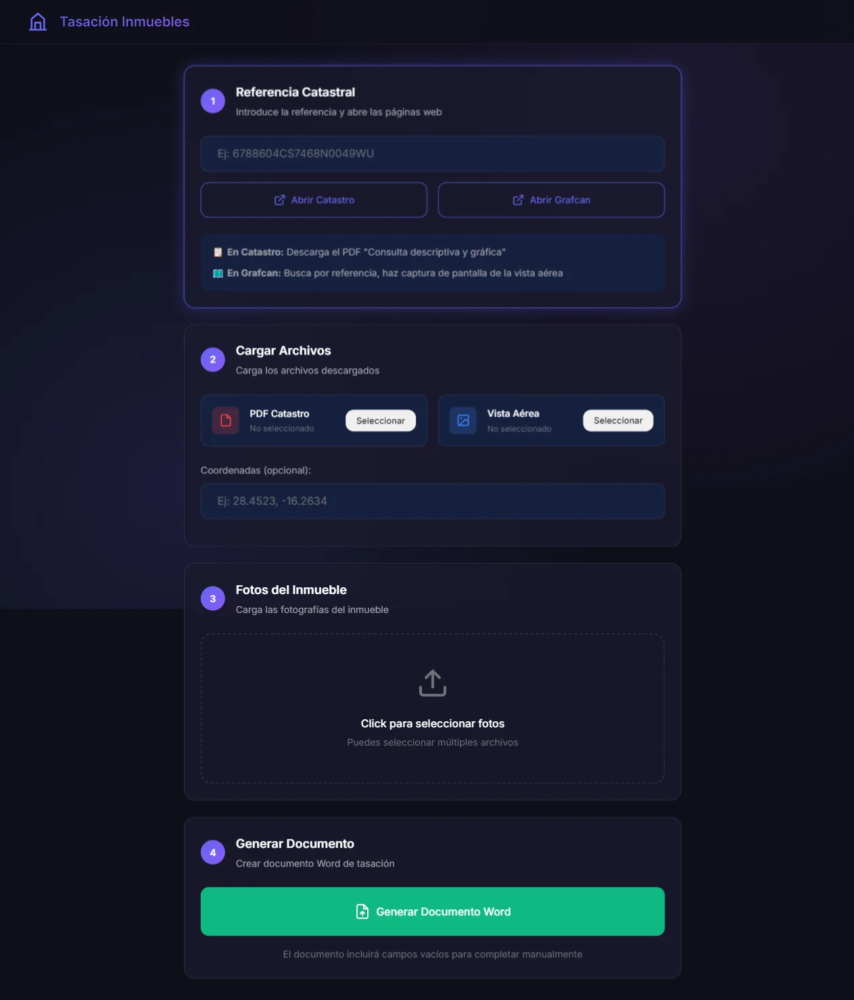
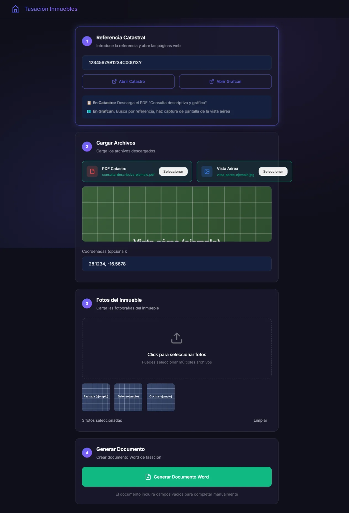
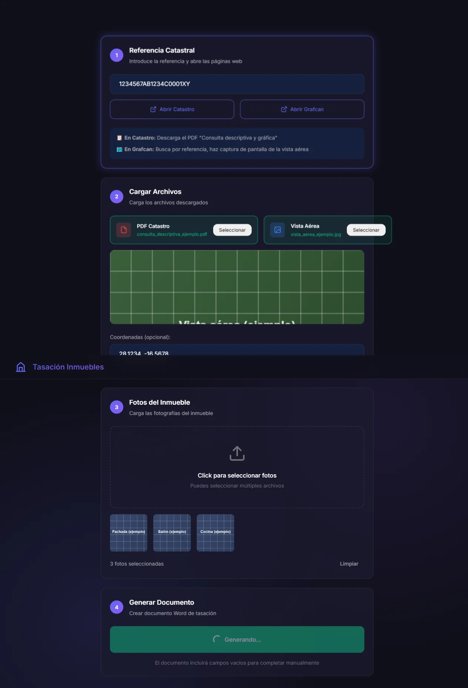

App de escritorio (Electron) con un robot por dentro: abre un navegador headless (Puppeteer), entra sola a la web del Catastro con la referencia catastral, descarga el PDF oficial de la consulta descriptiva, y después entra a Grafcan a capturar la vista aérea — todo sin tocar el navegador a mano. Con eso arma la tasación completa y entrega el Word listo para firmar.
Proyecto privado de una mentoreada o cliente — esta página muestra solo capturas de uso, sin el código fuente. Por protección de datos, la información que ves acá es ficticia.


